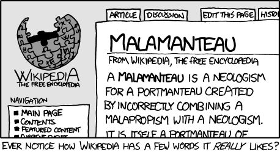

Linguistics
I'm a huge fan of linguistics, many thanks to an academic summer camp a few years back that got me absolutely hooked. I have gone on to take many classes at Columbia with respect to this subject, as well as creating my own ConLang (constructed language) and writing a couple of papers as part of assignments.
My projects/papers/the like:
Hyphenated Minds: Russian Accent Perception Study
Spring 2021
One of my favorite parts of the Spring semester was working on my Linguistics project. Of course, this isn't to say that I did not enjoy the three other projects I was working on, but my project for the Hyphenated Minds class (taught by visiting professor Danko Sipka of ASU) was a one-person job; other than initial consultation with Danko to discuss the direction that I would like this project to take, I came up with this idea entirely by myself. It also ended up with quite interesting results, for a project whose experiment and analysis stage was completed in under two weeks!
This study focuses on the perception of the strength and intelligibility of Russian accents, specifically of people from St. Petersburg who moved to the United States. There were 7 recordings which 27 people judged on a Google Form.
Each recording was analyzed beforehand in Praat to determine the number of differences in pronunciation from Standard American English. After those scores are collected they are combined into one final score that was then used when doing the data analysis.
The results were really quite interesting! There was a clear positive, almost-linear correlation between the number of correct (or almost-correct, I also took Eastern-European/Slavic because people guessed that as the same rate as Russian) guesses and the number of phonetic alternations and a strong positive correlation between the perceived strength of the accent and the number of phonetic alternations. It was also nice to see that the more strong the accent was, the more certain people were of their answers; respondents barely voted 1 or 2 at perceived strengths of 4 or 5. The intelligibility score was the main loss here; according to respondents it seems like everyone was very much mutually intelligible so every subject got a score of 1 or 2. It again did result in some sort of upward trend, but it was not clear enough to determine if it was due to correlation.
The main problem that I ended up having with this data was a gross lack of it. Because of Columbia's shortened semester, I could not gather nearly the amount of recordings that I would have liked, and I would have then also made multiple Google Forms to randomize the order in which people listened to the recordings or the recordings which they would hear. Perhaps this can be done in a future iteration of the project, but in the case of this paper, it is important to note that all results have to be taken with a grain of salt.
Hyphenated Minds in general was an absolute gem of a class and hit really close to home during the course of the semester. I myself am a heritage speaker of Russian, and I have taken classes at Columbia specifically tailored to teaching Russian (mostly grammar, writing, and reading) to heritage speakers - something that I did not know was a field that people actually studied at the time, much less made whole courses for. Discussing with other classmates, who were often heritage speakers themselves, about the disconnect we often feel, the world's stance on bilingualism, and the fickle subject of revitalization were some of the most personal discussions that I have had at Columbia.
It was so wonderful to be able to do Linguistics research again! Even though I did not have time to complete this to the perfection I wanted it to be and there is so much left to look at with just this data, I thoroughly enjoyed annotating recordings, going through the form responses, and being able to draw my own conclusions from them. Hopefully I have more opportunities to do so in the future.
You can look at the paper in full here.Languages of Africa: Maasai(Maa)
Fall 2020
For the Languages of Africa class taught by Prof. John McWhorter, I focused my final report on the Maa language, spoken by the Maasai people in Kenya and Tanzania. The paper focuses on two interesting aspects of the language, specifically the presence and use of advanced tongue-root vowel harmony and the way that words are borrowed into the language from Swahili and English. This is not my own research - it is more in a paper summary format - but personally I found it useful to condense the knowledge I found in other papers into a more comprehensive read. The Maa language is very intricate in many ways, and these two aspects are something I believe even non-linguists can appreciate.
The paper can be found here.
Field Methods: Balti
Spring 2020
As part of the Language Documentation: Field Methods course taught by Dr. Meredith Landman,
I got the chance to work on an endangered language from the ground up. The language that the
class worked on for the semester was Balti, a Tibetic language spoken in the Kashmiri region
of Pakistan. Below are the three papers that I wrote for the course. If you want to look
at the final class product, several students worked through the summer as well to create a
comprehensive Balti dictionary.
Balti Phonology
Balti Morphology
Balti Syntax
Russian [i] vs. [ɨ] distinction
Spring 2020
During the Phonetics and Phonology class taught by Dr. Meredith Landman, I wrote a paper on Russian's [i] vs. [ɨ] distinction in English. My informants were two Russian-speaking relatives, whom I call Speaker 1 and Speaker 2. Using Praat, I analyzed recordings of both informants reading from a list of Russian and English words containing [i] and [ɪ] to see how they would pronounce them, to determine what a native Russian speaker would consider a phoneme in foreign words. The result is that the [i] vs. [ɨ] distinction exists in English, but [i] vs. [ɪ] distinction does not exist for Russian speakers.
An interesting difference is that because Speaker 1 learned to speak English and not just read it, when she is made aware of this English distinction she intentionally tries to pronounce it with the proper pronunciation, while Speaker 2 cannot distinguish the two sounds even after being made aware of there being a difference in English.
You can read the full paper here.
Thabulou
Summer 2015
As part of the Linguistics course I took in Summer 2015 from Johns Hopkins Center for Talented Youth, one of our ongoing assignments during the three weeks were to create a language from scratch, or a "ConLang". It could have any features that we wanted and its creation was used to test our learning throughout the course. It is unfinished in many ways, as it was done during three weeks and then I only worked on it for a little bit of time afterwards, but it was one of my favorite assignments to work on.
The result is a language that works similar to English in the sense that it is SVO, and it has its own working alphabet and grammar. The most underworked part is the vocabulary, as it is actually a bit difficult to make up words that don't sound like any words you know (which was my goal at the time). It is not able to be used for practical purposes either, as the words that I have come up with over the years are not from the Swadish list and instead are just words that I thought would be potentially useful at the time.
You can look at the documentation for Thabulou here.